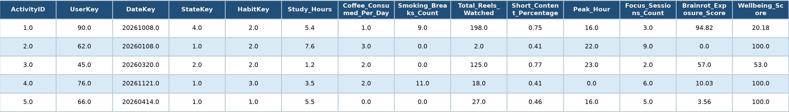
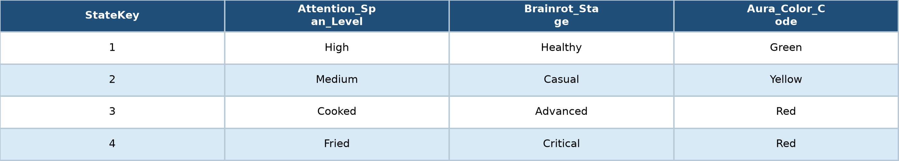
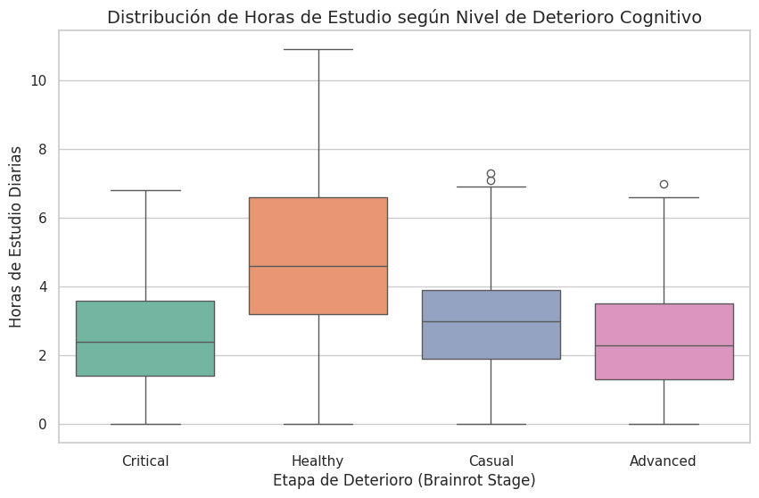
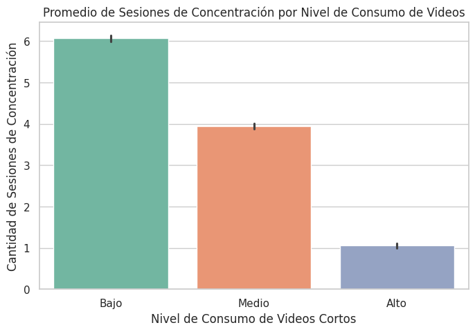
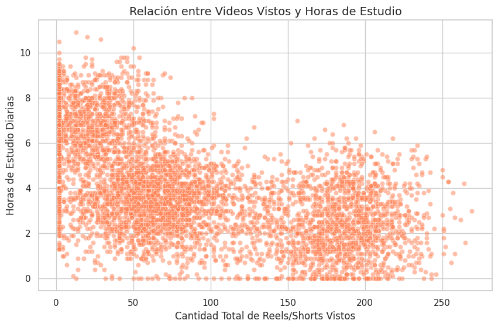

LABORATORIO DE MÉTODOS CUANTITATIVOS APLICADOS A LA GESTIÓN · 2026
Consumo de videos cortos
y atención mental
Un recorrido reproducible por los datos, las transformaciones y las asociaciones observadas entre consumo digital, estudio y concentración.
Explorar el trabajo ↓01 / PLANTEAMIENTO
De una inquietud
a una pregunta analizable.
El trabajo explora cómo se relaciona la intensidad de consumo de videos cortos con indicadores vinculados al estudio y la concentración.
La pregunta se aborda desde un enfoque descriptivo: buscamos identificar regularidades en los registros disponibles, comparar grupos y observar distribuciones, sin atribuir relaciones causales.
Pregunta orientadora
¿Qué patrones descriptivos aparecen entre el consumo de videos cortos, las horas de estudio y las sesiones de concentración?
02 / FUENTE Y EXPLORACIÓN
Conocer los datos
antes de analizarlos.
La exploración inicial permitió reconocer la estructura de las tablas, sus variables y aspectos básicos de calidad.
TABLA DE HECHOS
Fact_User_Activity
Registros de actividad y medidas: horas de estudio, reels vistos, sesiones de concentración y otros indicadores.
StateKey · HabitKey · UserKey · DateKeyclaves
Dim_MentalStateEstado mental / Brainrot Stage
Dim_UsersCaracterísticas de usuarios
Dim_HabitsHábitos
Dim_DateCalendario
Control de calidad registrado
En la exploración de las cinco tablas no se detectaron filas duplicadas. Se identificó un valor nulo en Dim_Habits.Coffee_Level, que no interviene en el análisis principal.
La dimensión calendario contiene fechas de 2026; esto no implica que todos esos días tengan actividad observada. La cobertura efectiva se determina con las fechas de Fact_User_Activity.
03 / ESTRUCTURA DE LAS TABLAS
Dos tablas centrales
del análisis.
Las capturas permiten reconocer los atributos originales y distinguir las medidas de actividad de las categorías que contextualizan los registros.
TABLA DE HECHOS
Fact_User_Activity
Concentra los registros de actividad. Sus claves vinculan cada observación con las dimensiones de usuario, fecha, estado mental y hábitos.
- ActivityIDIdentificador del registro de actividad.
- UserKey · DateKeyReferencias al usuario y a la fecha.
- StateKey · HabitKeyClaves para enlazar estado mental y hábitos.
- Study_HoursHoras diarias de estudio registradas.
- Focus_Sessions_CountCantidad de sesiones de concentración.
- Total_Reels_WatchedVideos cortos vistos; variable usada para categorizar consumo.
- Otras medidasIncluye indicadores de actividad, exposición y bienestar disponibles en la tabla.

DIMENSIÓN
Dim_MentalState
Tabla categórica que aporta información sobre el estado mental asociado a cada registro mediante StateKey.
- StateKeyClave de identificación y vinculación.
- Brainrot_StageCategoría/etapa de estado mental utilizada para agrupar el boxplot.
- Otros atributosSe muestran en la captura; su interpretación depende de las definiciones documentadas en el dataset.
Las categorías se utilizan tal como aparecen en los datos; no se les atribuye una interpretación clínica ni una validación externa.

¿Por qué se relacionan?
StateKey permite incorporar Brainrot_Stage a los registros de actividad. Así se compara la distribución de Study_Hours entre las categorías de la dimensión.
04 / PROCEDIMIENTO
Un flujo de trabajo
en tres operaciones.
La secuencia transforma tablas relacionadas en una estructura que permite comparar grupos y estudiar patrones.
pd.merge()
Integración
Se une la tabla de actividad con la dimensión de estado mental mediante StateKey, incorporando Brainrot_Stage a cada registro.
Hechos + dimensión mental → df_completo
pd.qcut()
Categorización
La variable Total_Reels_Watched se divide en tres grupos por cuantiles: Bajo, Medio y Alto.
Variable numérica → categoría ordinal
groupby() · mean()
Resumen
Se agrupa por nivel de consumo y se calculan promedios de Study_Hours y Focus_Sessions_Count.
Grupos → estadísticas descriptivas
Fragmento del procedimientoPYTHON / PANDAS
df_completo = pd.merge(
dfs['Actividad (Hechos)'],
dfs['Estado Mental (Dimensión)'],
on='StateKey', how='inner'
)
df_completo['Nivel_Consumo_Videos'] = pd.qcut(
df_completo['Total_Reels_Watched'],
q=3, labels=['Bajo', 'Medio', 'Alto']
)
resumen_estadistico = df_completo.groupby(
'Nivel_Consumo_Videos', observed=False
)[['Study_Hours', 'Focus_Sessions_Count']].mean()05 / LECTURA DE RESULTADOS
Tres perspectivas
sobre los registros.
Las visualizaciones complementan la exposición oral: aquí se presentan con una lectura metodológica y sus cautelas.
FIGURA 01
Distribución de horas de estudio
El boxplot compara las horas de estudio diarias entre categorías de Brainrot Stage. Healthy presenta una mediana más alta; Critical y Advanced muestran medianas menores. Las cajas y los bigotes describen dispersión y rango, no un límite de capacidad cognitiva.

FIGURA 02
Sesiones de concentración por consumo
Los promedios descienden entre los grupos Bajo, Medio y Alto. En los registros analizados, el promedio es de 6,07; 3,95 y 1,06 sesiones, respectivamente.

FIGURA 03
Videos vistos y horas de estudio
La nube de puntos presenta una tendencia general negativa: a mayores cantidades de videos vistos aparecen, en términos generales, valores menores de horas de estudio. La dispersión también evidencia variabilidad entre registros.

06 / INTERPRETACIÓN Y ALCANCES
Qué permiten afirmar
los datos.
El valor del análisis está tanto en los patrones observados como en delimitar aquello que no puede concluirse.
Patrón descriptivo
Los grupos de mayor consumo presentan promedios menores de sesiones de concentración y horas de estudio en las comparaciones realizadas.
No es causalidad
Las asociaciones no prueban que consumir videos provoque una disminución de estudio o concentración.
Límites de medición
Horas de estudio no equivalen a rendimiento académico. Los indicadores y categorías se interpretan según las variables disponibles, sin validación clínica.
CIERRE
El análisis exploratorio permite identificar regularidades y formular preguntas mejor delimitadas. La evidencia observada describe asociaciones en este dataset; no reemplaza un diseño que permita explicar sus causas.